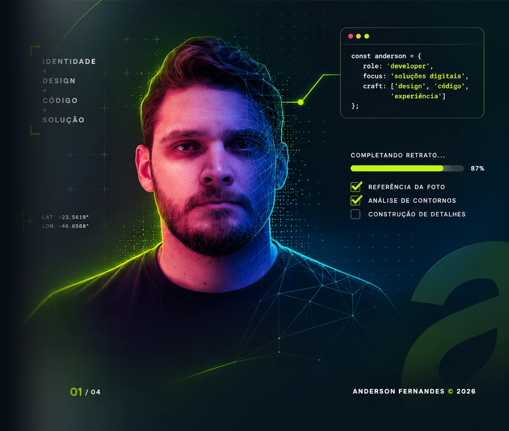

DESENVOLVIMENTO WEB & SOFTWARE
Prazer, eu sou
Anderson
Fernandes.
Eu crio sistemas sob medida
Sites, sistemas e experiências digitais que transformam necessidades reais em soluções para pessoas e negócios.
DISPONÍVEL PARA NOVOS PROJETOS

01 / 04ANDERSON FERNANDES © 2026